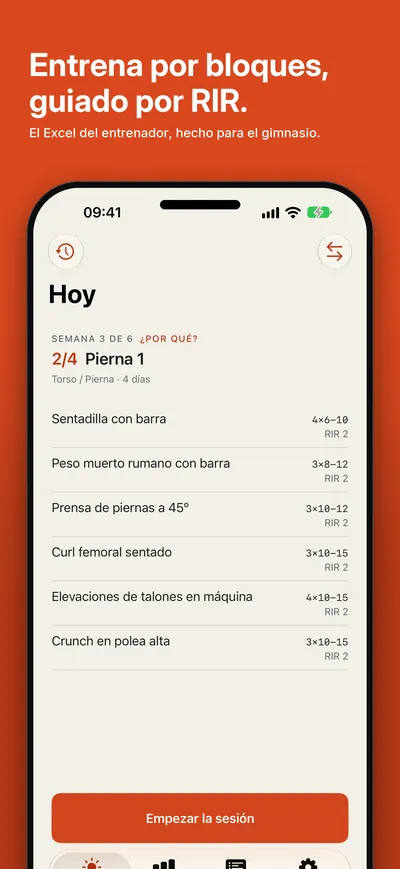
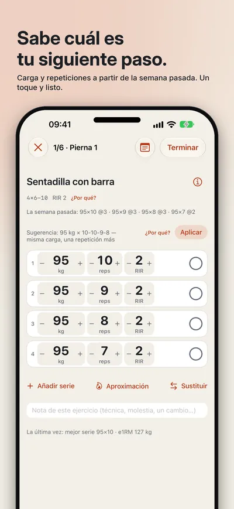
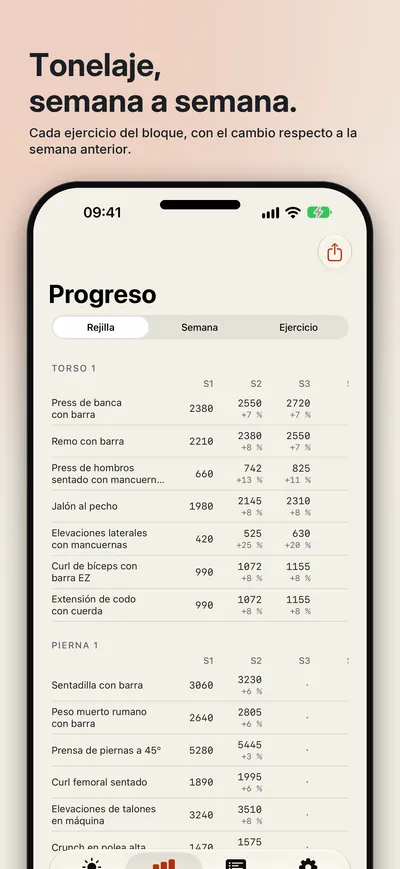
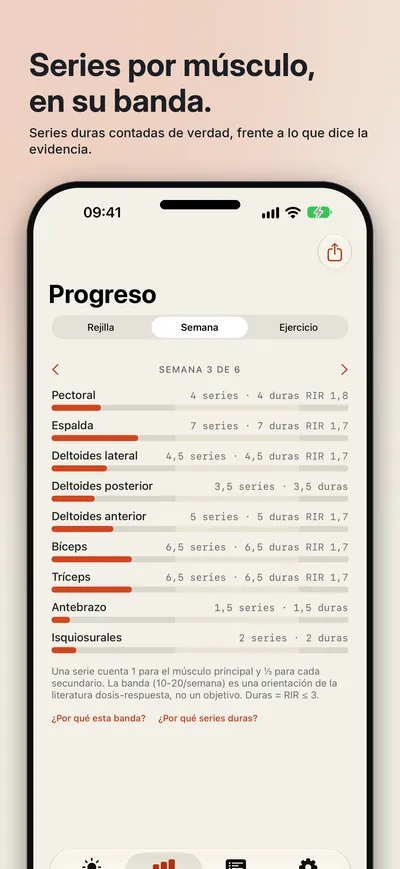
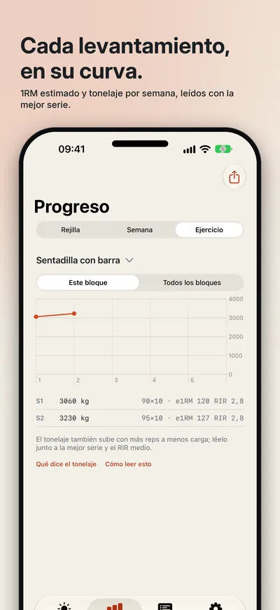
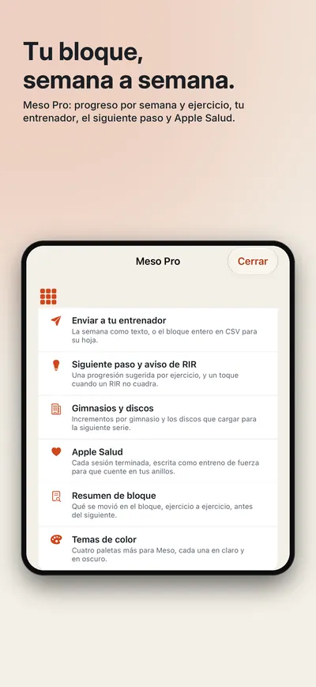

Seize Apps · iOS
Meso
Un programa es un bloque de semanas, no una lista de entrenos. Meso toma las sesiones que te escribió el entrenador —o una de sus plantillas— y las convierte en un registro que se rellena solo: cada serie llega rellena con tu mejor sesión reciente, las que quedan siguen a cada serie que confirmas, un toque la confirma y el esfuerzo se apunta como repeticiones en reserva. Después enseña si el bloque avanza: tonelaje por ejercicio semana a semana y, con Meso Pro, series por músculo frente a lo que la evidencia dice que basta.






Qué hace
Una sola cosa, bien hecha.
- 01 / APUNTAR
Un toque por serie
Carga, repeticiones y RIR vienen rellenos de tu mejor sesión reciente, y cada serie que confirmas replanifica las que quedan a sus repeticiones y su RIR; el ✓ es toda la entrada cuando nada cambió. Una nota por ejercicio, series de aproximación si las quieres y la siguiente serie en la pantalla de bloqueo.
- 02 / PROGRESAR
Bloques, no días
Una rejilla de tonelaje por ejercicio a lo largo de las semanas. Meso Pro añade las series por músculo frente a la banda de 10–20, el 1RM estimado de cada ejercicio a lo largo de los bloques, el siguiente paso antes de la primera serie, tus gimnasios con su barra y sus discos, la semana enviada a tu entrenador y temas de color: una compra única, con 30 días de prueba gratis. Sin rachas ni confeti: la progresión se mide en bloques.
- 03 / APRENDER
Cada regla con su fuente
Por qué RIR, por qué una descarga, por qué la banda: cada principio de la app lleva su evidencia y lo sólida que es, con referencias que puedes comprobar. Honesta con lo que está claro y lo que no.
Privacidad
Tuyo, no nuestro.
Meso guarda tus programas y sesiones en tu dispositivo y en tu propia cuenta de iCloud. Apple Salud solo se escribe si lo activas, y nunca se lee. Sin cuenta, sin analítica.
Una app de Seize Apps.